BioDrive is three kinds of work stacked. A layer map makes that legible to NFLPA, Exos, the clinics, and the research review that will ask for one within eighteen months.
Shiftwave shipped the NFLPA, OneTeam, and Exos deal in late 2024. FIBO 2026 brought BLACKROLL and Europe. Cognitive Clarity rolled out for women this year. The ambulance ran into the LA fires and came back with data. Fifty clinics now. Twenty-four people doing it.
Roughly sixty percent of what BioDrive does is traditional code reading HRV, heart rate, SpO2, and shaping a waveform against a lookup. Thirty percent is rule-based logic that the founders wrote into the product over years of lab work. Ten percent is the place where a real model earns its keep, the adaptation that cannot be reduced to a rule.
When those three layers are separated cleanly, procurement at NFLPA and a clinical network has an artifact to review. When they are not, "AI-powered" becomes the sentence a regulated buyer pushes on first.
HRV, heart rate, SpO2 read on device. Waveform shaped against a lookup. Deterministic. Testable. Already works.
Protocol rules written by the founders and the medical officer over years of lab work. Versioned text, not a model.
Adaptation that cannot be reduced to a rule. The narrow slice that deserves the AI label, and the training regime to back it.
Shiftwave is calling three different kinds of work "AI" and needs a clean layer map before the NFLPA research review asks for one.
Feeld is a product company with a technical CTO. The engagement ran as a scoped sprint. A workshop, advisory calls, an Organizational Context Architecture, and a Strategic Operations Framework. The deliverable that mattered was a readable map of what the company actually does, layer by layer, so the team could extend it without rebuilding the spec every quarter.
That is the artifact Shiftwave needs before the NFLPA joint-research review.
Published in ACM TiiS. Repository public under MIT license. The same pattern the protocol library already wants to be, formalized.
Paper and code: github.com/RinDig/Interpretable-Context-Methodology-ICM-
The Ethics Engine is a psychometric assessment tool for evaluating ideological and moral patterns in LLMs. Useful when a clinical network, a league, or a regulated buyer starts asking what the model believes. Paper: arxiv.org/abs/2510.11742. Code: github.com/RinDig/AuditEngine.
Eduba partners with NLP Logix for work that sits below the orchestration layer. NLP Logix has been in machine learning since 2011 and runs over 150 data scientists. The conversation starts with Eduba. Heavy ML engineering and production data infrastructure routes across the partnership when the work calls for it.
Marine Corps veteran. Eight years on cryptographic systems and F-35 / F-18 avionics. MSc Future Governance, University of Edinburgh. Published in ACM TiiS on the methodology above, on arXiv for the Ethics Engine, and in the Saints Academic Review.
1,500+ people trained across enterprise engagements since May 2025. The workforce-AI case study: Correlation One into Pacific Life and Colgate-Palmolive. Six thousand to nine thousand hours saved a year. Ninety-five percent still using the tools thirty days after the workshop. On the regulated-industries side, 40+ executives trained at KPMG UK, one of the Big Four.
Jake also built an online community to 22,000 members in five weeks.
We will sketch the layer split live. If the read holds up, the scoped sprint follows the Feeld shape. If it does not, we shake hands and you keep the notes.